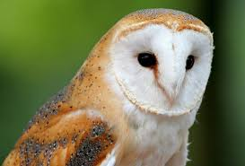
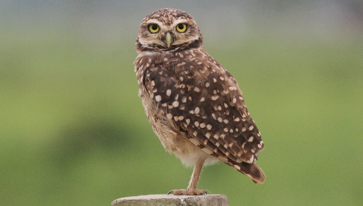
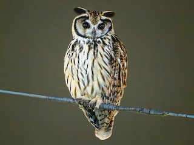
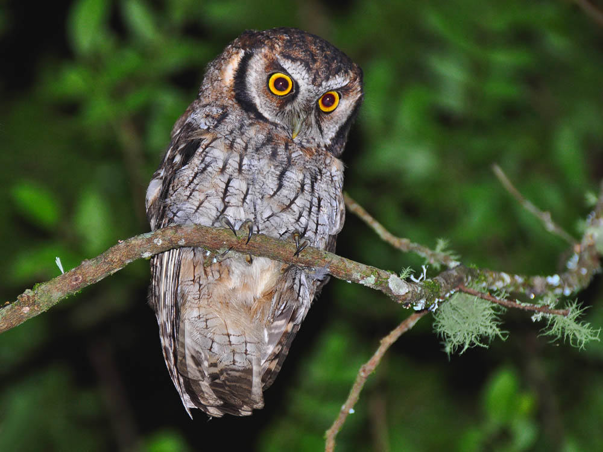
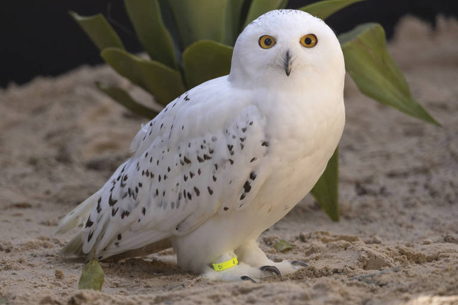

Existem diversas espécies de corujas ao redor do mundo, cada uma com características únicas. Algumas das espécies mais conhecidas incluem a coruja-das-torres (Tyto alba), a coruja-buraqueira (Athene cunicularia), a coruja-orelhuda (Asio otus) e a coruja-do-mato (Strix aluco). Cada espécie possui adaptações específicas que lhes permitem sobreviver em seus respectivos habitats, desde florestas densas até áreas abertas e urbanas.
A coruja-da-igreja, também conhecida como coruja-das-torres, é uma das espécies mais amplamente distribuídas no mundo. Ela é facilmente reconhecida por sua face em forma de coração e plumagem branca com manchas douradas e cinzentas. Essa coruja é conhecida por sua habilidade de caça silenciosa e é frequentemente encontrada em áreas rurais e urbanas.
A coruja-buraqueira é uma espécie nativa das Américas, conhecida por sua habilidade de cavar tocas no solo para se abrigar. Ela possui uma plumagem marrom com manchas brancas e é relativamente pequena em comparação com outras corujas. Essa espécie é frequentemente encontrada em áreas abertas, como campos e desertos.
A coruja-orelhuda é uma espécie de coruja noturna que se destaca por seus "orelhas" proeminentes, que na verdade são tufos de penas. Ela possui plumagem marrom e laranja, o que a ajuda a se camuflar em seu ambiente natural. Essa coruja é encontrada em florestas e áreas abertas, onde caça pequenos mamíferos e aves.
A coruja-do-mato é uma espécie de coruja de grande porte, conhecida por sua plumagem marrom e olhos grandes e expressivos. Ela é frequentemente encontrada em florestas densas e áreas rurais, onde caça pequenos mamíferos e aves. Sua vocalização é distinta e pode ser ouvida à noite.
A coruja-das-neves é uma das espécies mais icônicas, conhecida por sua plumagem branca e olhos amarelos brilhantes. Ela é nativa das regiões árticas e subárticas, onde se adapta a ambientes frios e nevados. Essa coruja é um excelente caçadora, alimentando-se principalmente de roedores e aves.
